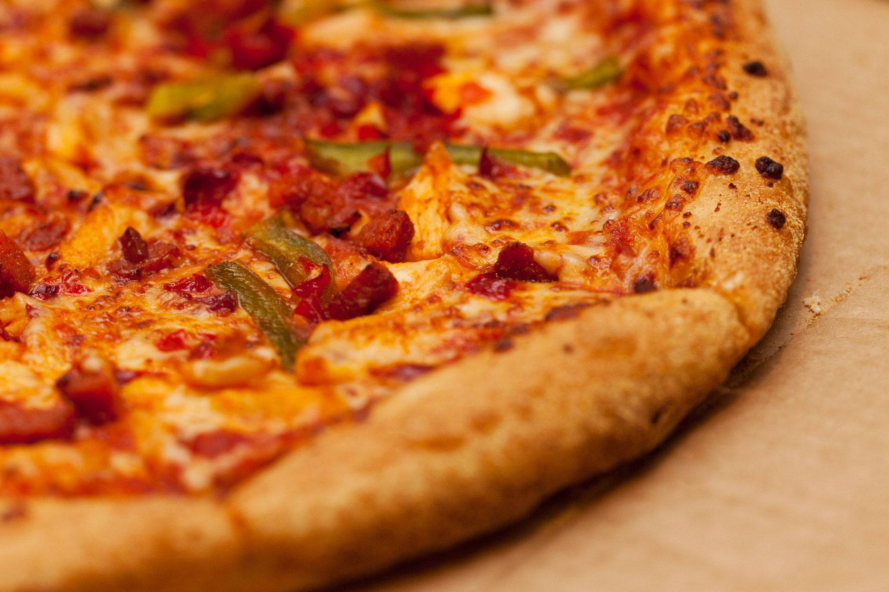

Welcome!
Pizza is a widely enjoyed food. However, rarely do these people know that all pizza is based in chemistry...

Pizza is a widely enjoyed food. However, rarely do these people know that all pizza is based in chemistry...